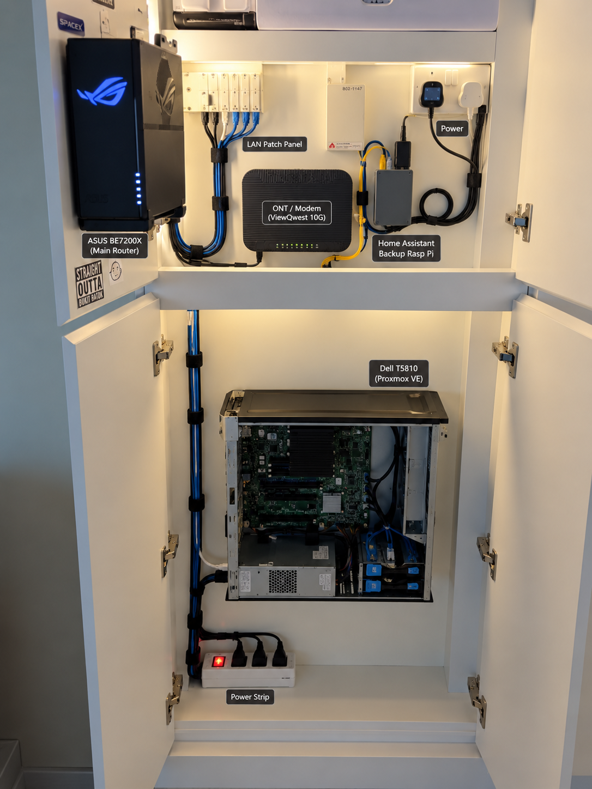

ACTIVE01
Proxmox Homelab
Core virtualisation environment on a Dell Precision T5810, used to host infrastructure, storage, smart-home services and Linux lab environments.
View project →SYSTEMS · INFRASTRUCTURE · SECURITY
I'm a Singapore-based Systems Administrator building a hands-on portfolio around infrastructure, networking, Linux, smart-home systems, client projects and a transition into cybersecurity and cloud security.
$ whoami
siraj.hundal
$ cat current_focus.txt
Proxmox + OPNsense
TrueNAS + 10Gb networking
Home Assistant / IoT
Linux environments
Security labs
$ uptime
building, testing, learning01 / PROJECTS
This portfolio is project-first: home infrastructure, experiments, client work and the systems I keep improving.
Core virtualisation environment on a Dell Precision T5810, used to host infrastructure, storage, smart-home services and Linux lab environments.
View project →Virtual firewall/router with DHCP, DNS, interface and bridge experiments, traffic monitoring and IDS/IPS work.
View project →Self-hosted storage project for learning ZFS, shared storage, backup design and local alternatives to cloud storage.
View project →Local-first smart-home platform integrating Zigbee, IR/RF and network devices for automation, dashboards, voice control and backup.
View project →Multi-gig home network built around a ViewQwest 10Gbps plan, virtualised routing, 10GbE links and an ASUS router ecosystem.
View project →Singapore-focused Home Assistant service concept covering local control, device integration, automation, dashboards and support.
View project →Restaurant infrastructure project covering NAS replacement, storage setup, data migration and validation of the new shared-storage environment.
View project →Live survey platform with a leaderboard built for an external client to improve engagement, using HTML, CSS and JavaScript.
View project →02 / HOMELAB
The homelab is not a collection of screenshots. It is the environment I use to test ideas, break things, recover them and document what I learned.
Physical and virtual layers shown together.
PHYSICAL LAYER
The lab extends beyond VMs and dashboards. Networking gear, ISP equipment, the backup Home Assistant Raspberry Pi and the Proxmox host all have to coexist in the same physical space.
Organised representation of the physical setup — used here to show the intended equipment layout and cable routing.

Build real infrastructure instead of learning only from videos.
IAM, Microsoft security, Azure labs and infrastructure-as-code.
Document the problem, the fix and what I would do differently.
03 / ENVIRONMENTS
The systems I use for work, experimentation, Linux administration and security learning.
Primary desktop environment, with Kali Linux used for controlled security learning and experimentation.
Linux environment used at the office desk for administration, experimentation and learning.
TV-based Linux environment used as an additional everyday Linux system.
Secondary small-form-factor machine used as another system in the lab ecosystem.
Virtualisation layer running on the Dell T5810 and hosting the core homelab services and test environments.
04 / CURRENTLY BUILDING
The lab changes constantly. This section makes that visible instead of pretending every project is finished.
Working through storage configuration, datasets, shares, permissions and the backup approach for the virtual NAS environment.
Continuing to improve multi-gig connectivity, routing and troubleshooting across the home environment.
Maintaining the primary HA environment on Proxmox and the Raspberry Pi backup path.
05 / ROADMAP
I'm building toward cybersecurity and cloud security without throwing away the infrastructure experience I already have.
06 / ABOUT
My professional experience is centred on enterprise Windows environments, identity, endpoint management and infrastructure support. Outside work, I use my own lab to explore networking, virtualisation, storage, Linux, smart-home systems and security.
The goal of this site is simple: show the work, explain the decisions and keep a record of what I learn.